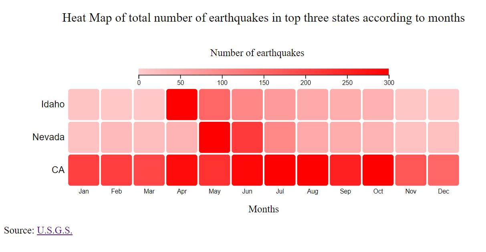

Name : Vaishnav Kshirsagar (20566261)
Beta Release
Back ground and Motivation
In the most destructive disasters list till now, two of them in the top 4 are earthquakes. In spite of having the data related to the previously happened earthquake events, it is really hard to use that data to analyze for making future predictions. There is a lot of need to know the earthquake-prone areas and where more care should be taken. The motivation for choosing the dataset is to help the scientists get to know about which are the earthquake-prone areas also for the government to be prepared for facing such unexpected disasters to reduce the loss.
Description and objectives
The project is an attempt to help the researchers and people interested in geospacial science about earthquakes. The project is a story telling about the earthquakes happened in United States in last 2 years (2018-01-01 to 2020-10-28). It contains 4 main visualizations.
- What are the top three most earthquake-prone regions by the province/state in the United States?
- Once the scientists can see which are the earthquake-prone regions they can study different statistics about these areas and compare them according to how much earthquake-prone the area is by getting how many earthquakes are happening in the region. Also, they can analyze which region is the most earthquake-prone of all.
- In order to get this insights we can see the data mapped on a United States' symbol map.
- Here is a screenshot of the demo.

- We can clearly see from the map that California is domniating over all the states. But, taking the data only of a single state to get trends of earthquakes according to months of year will be unethical. So, lets select the top three states for further analysis.
- By hovering on the circles we can see the value for better understanidng. We can compare states from this symbol map by this which is our first objective.
- Click here to see the demo. Compare the states and get the top three states from there.
- We got that California, Nevada and Idaho are the top three states having the higher number of earthquakes than other states. So our first objective is achieved here.
- For the top three regions, what are the trends in number of earthquakes according to the months of year and how many earthquakes are in each month for each of the three cities?
- The researchers can analyze the changes in the number of earthquakes according to the months and can see monthly trends in the number of earthquakes in these areas.
- In order to show this in a nice way, we can show it with a heatmap of states,months and number of earthquakes.
- Here is a screenshot of the demo.

- We can see that the number of earthquakes in the middle part of the year like May, June and July has more number of earthquakes than other months.
- Click here to see the demo. Compare the number of earthquakes according to months, we can clearly get that May, June and July has more number of earthquakes and more earthquake prone times.
- We got the trend of earthquakes in months here which was our second objective.